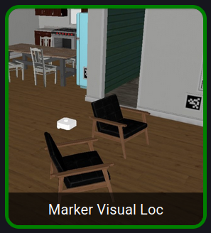

Practice 6 - Marker Visual Loc
Visual Localization with AprilTags: (Video)
In this practice, the robot performs self-localization using visual beacons (AprilTags). By detecting known tags in the environment and combining this information with a preloaded map of tag positions, the robot is able to estimate its pose (x, y, yaw) in real time.
The system alternates between visual localization and odometry-based prediction. When a tag is detected, the pose is corrected using PnP (Perspective-n-Point) and the known tag geometry. When no tag is visible, the robot relies on odometry to propagate its estimated position.
Practice difficulties:
Some of the main challenges faced during this practice were:
- Reliable detection of AprilTags under different viewing angles.
- Accurate pose estimation using solvePnP.
- Correct fusion between odometry and visual measurements.
- Maintaining stable orientation estimation (yaw normalization).
One of the main difficulties was ensuring a stable pose estimation when using AprilTags. Depending on the viewing angle and distance, the detection quality varied, which affected the accuracy of the PnP solution. To mitigate this, the largest detected tag (based on contour area) was selected to improve robustness.
Another key challenge was combining visual localization with odometry. When a tag is detected, the system directly corrects the robot pose using camera-based estimation. Otherwise, the pose is propagated using incremental odometry updates, which required careful transformation between coordinate frames.
Finally, maintaining a consistent yaw value was essential. The angle normalization using atan2 ensured that the orientation remained within the range [-π, π], preventing discontinuities in the estimated trajectory.
Tests carried out:
Several tests were performed to evaluate the performance of the visual localization system.
First, the robot was tested in scenarios where multiple AprilTags were visible. The algorithm successfully selected the most reliable tag based on its observed area, improving pose accuracy.
Additional tests evaluated the transition between visual localization and odometry. When tags were visible, the pose was corrected accurately, while in their absence the system was still able to maintain a reasonable estimate using odometry propagation.
Finally, the system was tested in different trajectories in the same map to verify robustness. These tests showed that the robot was able to maintain consistent localization even when tags were temporarily lost, recovering quickly once they reappeared in the camera view.